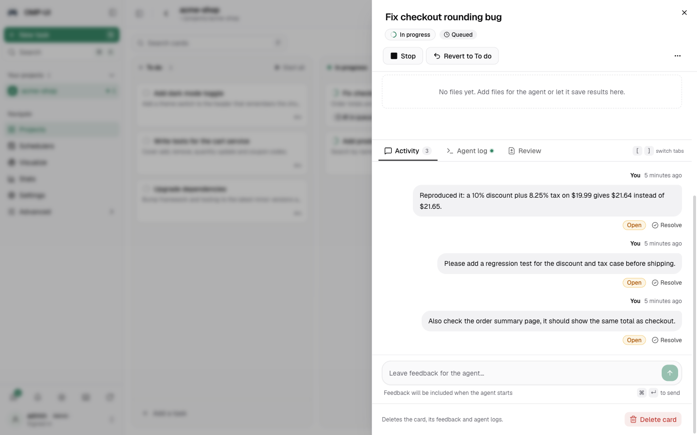
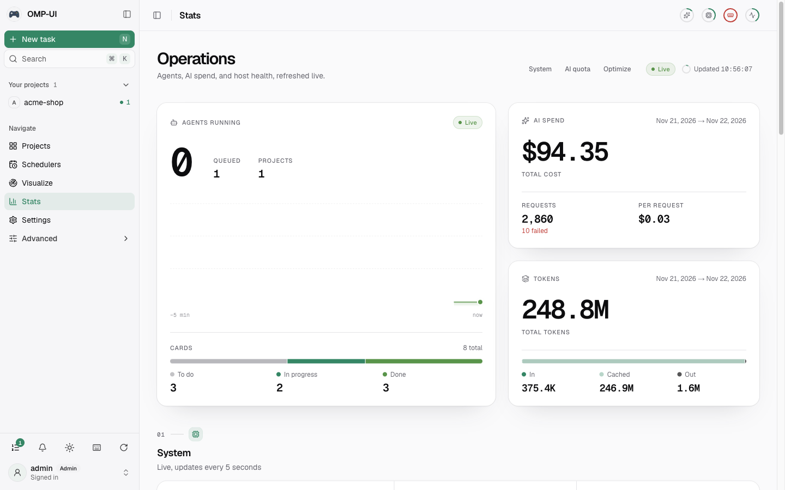
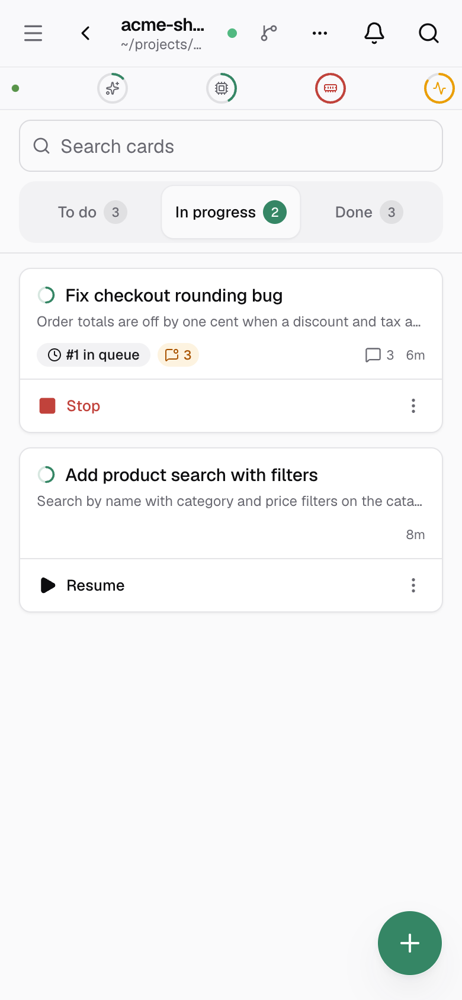

OMP UI · OMP web · OMP kanban
OMP UI: a great interface for OMP. Turn kanban cards into pull requests.
A self-hosted OMP kanban board. Write a card and auto OMP starts an agent on it. Review the work, then ship it.

Auto OMP: agents start from cards.
Plan, build, review, ship. One card goes from idea to pull request.
Cover add, remove, quantity update and coupon codes.
Add a theme switch to the header that remembers the choice.
Search by name with category and price filters.
Page 2 repeats the last item of page 1.
An OMP kanban board with everything around it
A board for the work, a live feed for each run, and tooling to run it your way.

Steer the agent with comments
Open a card to follow its run live and leave feedback. The agent picks it up and keeps going.
Merge conflicts, resolved
When a PR conflicts with its base branch, an agent resolves it for you.

Plain text in, agent running
Press N anywhere, describe the work, and the agent starts right away.

Usage and cost, streamed from omp
Running agents, AI spend, token usage and host health on one page.
- Schedulers
- Cron cards that create recurring work for the agent.
- Cluster mode
- Spread agent runs across several machines. Docs
- REST API
- Script your board from your own tooling. Docs
- Keyboard shortcuts
- N adds a card, Cmd or Ctrl K opens the command palette, ? lists every key.
- Environment variables
- Set the variables your agents see from the Env vars page.
One command to start.
pm2 and SQLite by default, so there is nothing to set up first. Needs Node.js 22.13 or newer.
$ npx omp-ui
Starting OMP-UI under pm2 (SQLite, data in ~/.omp-ui)
OMP-UI is running at http://localhost:3000
$ omp-ui status
running http://localhost:3000
$ omp-ui doctor
ok Node.js
ok omp
ok git, gh, pm2
$ omp-ui logs -f
- omp-ui
- Set up and start
- status
- Is it running, and where
- stop / start / restart
- Control the server
- logs -f
- Follow the server log
- open
- Open it in your browser
- config
- Change port, data-dir, db-url
- doctor
- Check Node.js, omp, git, gh and pm2
- update
- Update and restart
- help
- List every command
Prefer a permanent install?
OMP web on any device.
Self-host the OMP web UI on your machine or server, so your code and data stay with you. Follow and steer agents from your phone.
Tailscale
Private, over HTTPS, only from your own devices. Use tailscale funnel to share beyond your tailnet.
Cloudflare Tunnel
Prints a temporary trycloudflare.com link. For a permanent address, point a named tunnel at localhost:3000.
Docker
Then open localhost:3000.
OMP-UI runs commands on your machine. Before exposing it, set a strong admin password with omp-ui passwd.

OMP UI FAQ
What is OMP UI?
OMP UI is a web UI for omp. It runs omp agents on cards from a kanban board and shows their work in the browser, from plan to pull request.
Is there a web interface for OMP?
Yes. omp itself is a terminal tool, and OMP UI is the web interface for it. It sits on top of omp (oh-my-pi), which must be installed and signed in to an AI provider. omp-ui doctor checks your setup.
How does auto OMP work?
Add a card and an omp agent starts on it automatically, in your repository. Comment to steer it, then create a PR. omp must be installed and signed in; omp-ui doctor checks it.
Is OMP UI free and self-hosted?
Yes. It is open source under the MIT license, with no hosted plan. Your omp AI provider has its own usage costs. Run npx omp-ui, use pm2, or use Docker. Settings and data live in ~/.omp-ui and SQLite is the default database.
How do changes get shipped?
From the card, create a GitHub pull request or GitLab merge request, or push to main or the current branch.